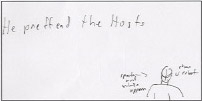

Kinetic Typography Example 1: Scene from the Movie Seven
The first kinetic typography example i choose is bit of dialogue from the movie Seven. In the scene the antagonist, John Doe played by Kevin Spacey, is talking to the protagonist, Detective Mills played by Brad Pitt. The scene the deranged killer John Doe is trying to convince Detective Mills that he was killing the bad people and that they all deserved to die. John Doe’s line are represented by a font that is not completely there to represent his crazy nature. Additionally the font has an “off” feeling about it which mimics the acting of the character. Furthermore in screenshot shown the creator of the video choose to underline the repeated dialogue rather than repeat it. This is a great idea because it really stress what the character, John Doe, is saying.
Link to the video
 s
s
Kinetic Typography Example 2: Bit from Comedian John Mulaney
The second example of kinetic typography is a stand up bit by comedian John Mulaney. In the scene John Mulaney talks about how easy it must have been to get away with crime back in the day. I like use of type to create movement and the type feels as if it is acting out the scene that John Mulaney is describing. The screenshot show a shot when John first starts talking about the 1930 and the creator uses a old feeling font to make the view feel more like they are in the 1930s.
Here is the link to the video

Story board
Scene 1

In this scene the character Theresa is talking about here pervious time at the Westworld park. The text is very casual and plain. The character does not yet know why she is in this scene and doesn't know about the other character's intent to imdemadate them.
Scene 2

In this scene the character Ford talks about balance. After the line is delievered there is a brief silence. I want to have the words perfectly and balanced, which are sitting on a scale to slightly to start to wobble back and forth before one of them tips the balance of the scale to show that it really isn't balanced and Ford mentions in the next scene.
Scene 3
In this scene Ford mentions how his old partern Arnold like the hosts, who are robots, better than he liked people. I was to show a human figure in the scene right before it this and when this line is delieves to show that the human figure is accautlay a robot by showing sparks and or smoke
Scene 4

This is the last line in the movie. This line stress that the character Ford, who delievers this line, is all power in this world that he created. I want the words we were gods to be big and intimating to make the tone of the the sentence and to try and make the viewer feel small compared to Ford's power in this world.
Link to full storyboardStart of Kinetic Typography Video
So far this week I have created around 70% of the word in the video and have the laid out where they belong. They are mostly timed right, with just some little fine tuning on the timing to be done. Once the type is laid out I then have to move on to creating more dynamic movements than I currently have. For the typeface I plan on using is Bodoni and Avenir, neither of these are final they are just placeholders for now. I don't really plan on using differnt font wieghts through out the video. For color I still need to work out what color scheme will work best with my video. The imagery that I plan on using is: a scale, a pile of coin/money/pokerchips for betting, a basic human portrait, a globe, a landscape sceen, blade of grass and a silhouetted human figure.